YouTube is one of the biggest platforms for consuming content, with a vast audience base. Hence it is no surprise that many podcasters want to make YT their primary base of operations.
But this platform is different - the content that gets uploaded on it significantly varies, and podcasters need to respect the difference and take steps to repurpose podcasts to YouTube.
A podcast, by definition, is a digital audio file played as an episode that is usually a part of a more extended series. Uploading MP3 content on a video streaming platform will not bode well for the creators.
When you create a podcast on a YouTube channel - it should not be a static image with audio playing in the background.
Want to know how to start a podcast on YouTube? You have come to the right place. We will help you understand the advantages and disadvantages of broadcasting on YT and the basic requirements for a perfect episode. Please stay with us, at the end of this article, you will come out more knowledgeable and more confident about the topic than when you went in.
Contents
- 1. How to start a podcast from YouTube
- 2. Record Episode on Your Webcam
- 3. Convert Your MP3 File to MP4 Format
- 4. Place the External Camera at Your Recording Spot
- 5. Set Media Hosting and Podcast Feed
- 6. Get You and Your Guest in a Single Frame
- 7. Exposes Your Content to a New Audience
- 8. You Can Engage with Users in the Comment Section
- 9. YouTube Analytics Provide More Sophisticated Data
- 10. YouTube Metadata Can Improve Your Search Ranking on Google
- 11. More Money and Equipment to Do a Podcast
- 12. Metrics from YouTube Analytics Are Not Accurate
- 13. Equipment Recommendations for Your Podcast on YouTube
How to start a podcast from YouTube
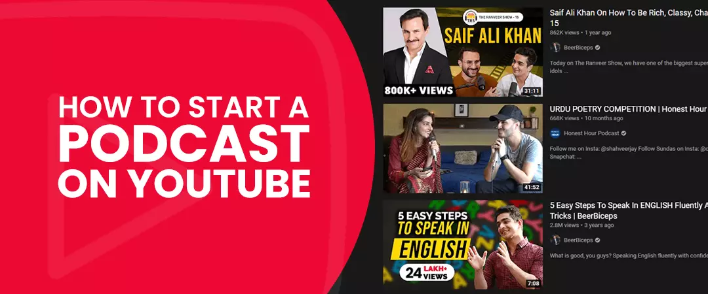
YouTube is a video streaming platform. Hence, just a voice-over is not viable. You are required to convert your audio elements into video format.
You don't have to show your face in your video. Instead, for the episode, an image can remain on-screen as your voice plays in the background – use this method if you are new to the platform and would like to test the waters before diving in.
Let us go through some prevalent means of uploading the podcast to YT.
• Record Episode on Your Webcam
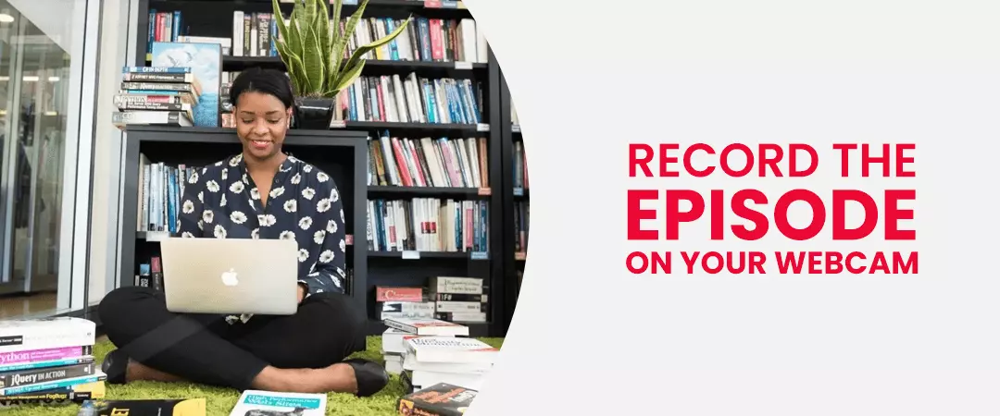
You can kick it up a notch and go from using an image to creating your first video footage. Before purchasing any external camera device, you can record and present your podcast on your in-built webcam - you will need an external microphone.
Software such as Zoom or QuickTime is ideal for capturing yourself talking. Tweak your microphone so that the software can pick up sound from your podcast mic and not from the built-in mic inside your desktop.
You have a choice of recording the entire episode in one session, or you can record footage in batches that come together to form your final episode. The former requires little to no post-record editing, whereas the latter requires you to modify each clip before joining them together.
• Convert Your MP3 File to MP4 Format
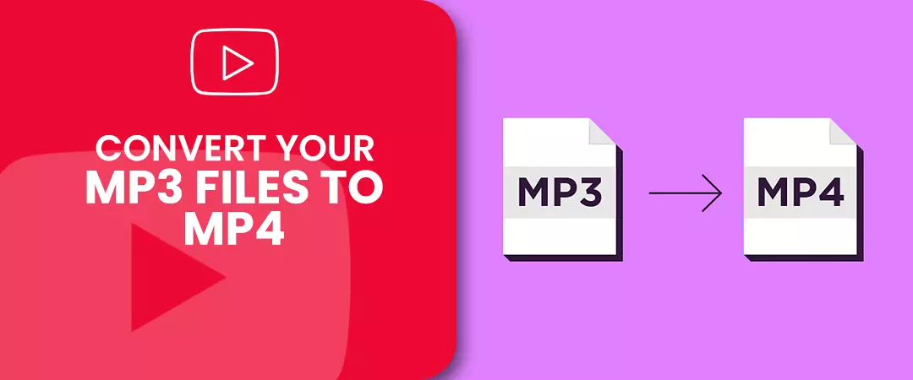
When you possess a large arsenal of quality audio resources, then converting them into MP4 is the easiest and the most time-efficient way of uploading a podcast to YT - you need to create a visual graphic for the background of your podcast.
You can outsource the work of creating your background graphic to a professional, or you can avail yourself the easy-to-use graphic design software like Snappa or Canva.
What counts as a graphic for your podcast? - resolution of your image should be 2560 x 2240 pixels, include your brand logo and mention the host's name.
MP3 to MP4 conversion uses 'Headliner' - with this tool, you can add up to 60 minutes of the MP4 file and associated subtitles together with multiple images that will play in a sequence for the entire length of your video. Do not go overboard when you insert sound or visual effects into your footage. Once you are satisfied with the end product, download the video file to publish as a podcast on YT.
• Place the External Camera at Your Recording Spot
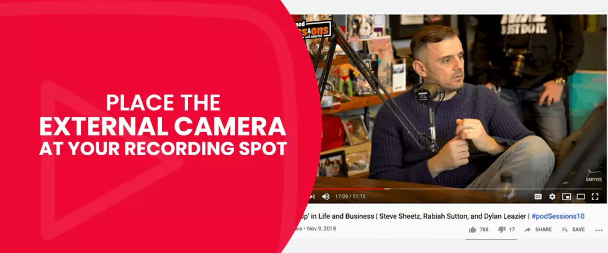
It is true that converting your audio file to a video format is cost-efficient and consumes less time, but nothing can beat the appeal of a quality video.
You don't necessarily need to have an expensive, feature-laden camera to record your footage. Still, your recording device should be good enough not to cause any discomfort to your viewers when watching your YouTube podcast. Your smartphone camera will do the trick as well - consider using it together with an attachable tripod for steady recording.
Your backdrop also does not require much of your attention - make sure that the frame is presentable. Run some initial tests by placing your camera at the spot of your choosing and look at the footage that it captures.
Podcasters who prefer using this setup usually want to record live episodes. Hence the footage does not go through a rigorous editing process. If you are one of them, then we suggest creating a solid podcast script beforehand to nail your episode on the first try. When you invite a guest to your podcast, make sure you guys are on the same page regarding the topic of discussion.
• Set Media Hosting and Podcast Feed
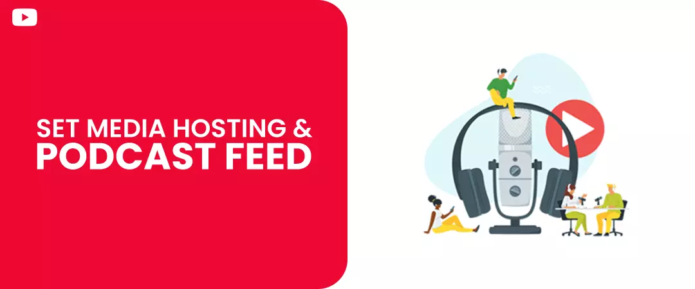
YouTube is an ideal platform to find more target audiences for your content. But it would be best if you did not use it as your chief source for hosting. The podcast is not the type of medium people usually like consuming on YT - you won't enjoy much success by diverting away from your original podcast network.
You have to establish media hosting and podcast feed before uploading your content on this platform.
We have listed down a few hosting sites for you to get started:
- Simple cast
- Buzzsprout
- Captivate
- Podbean
Similar to how web hosting services like Bluehost or Hostgator are used to host your domain, the websites above are a place where you host your podcast in MP3 format - they also are tools that enable you to produce your podcast feed.
After you create and upload some podcast episodes on the hosting sites, you have to share your RSS feed to podcast directories like Spotify, iTunes, stitcher, Google podcast, etc.
Once you complete all the above steps, you can now post your podcast to your YouTube channel.
• Get You and Your Guest in a Single Frame
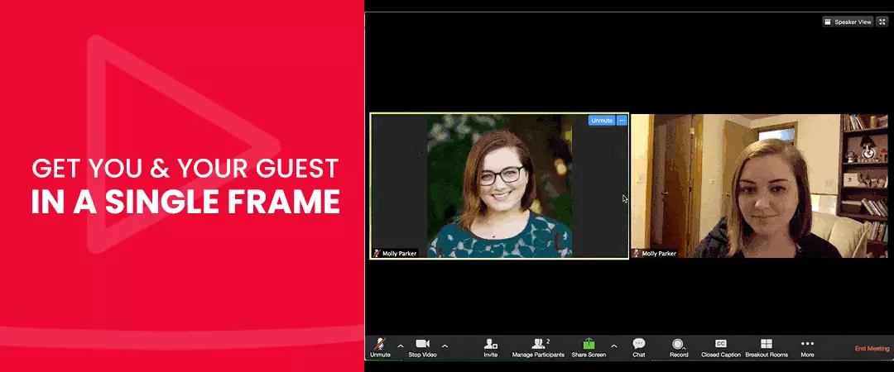
Even before the pandemic hit, creators were using Google meet, zoom, or SquadCast to collaborate with the guests based in a remote location. The use of the said tools has just escalated in this past year.
When you conduct podcast sessions with guests from different locations, configure your meeting software to capture video along with the audio. The end product will be a split-screen video that you can upload on YouTube as your podcast episode.
Podcasters who used this method seldom edit the final footage – although, you are required to make a lot of preparation before recording the podcast episode.
Pros of YouTube Podcasts
1. Exposes Your Content to a New Audience
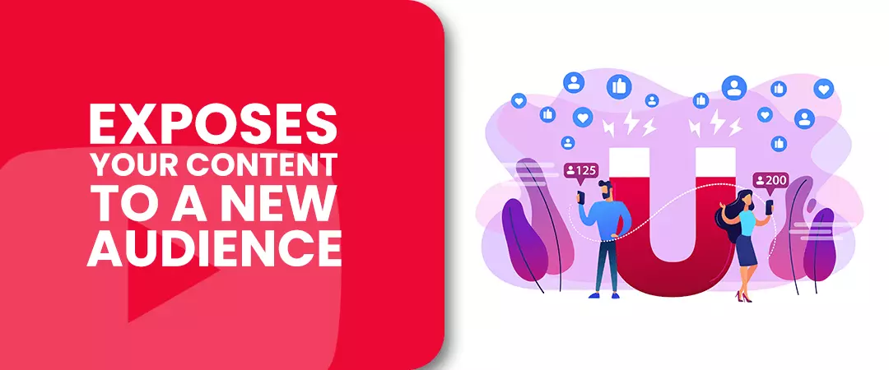
YouTube is the second largest search engine on the planet and boasts 2 billion + active users. Although the audience's preference of content differs – it is more significant than those present on any other podcast directory or network. YT is an untapped market for podcasters – scoring the attention of a substantial audience means more listeners for your shows and higher chances for channel growth.
2. You Can Engage with Users in the Comment Section
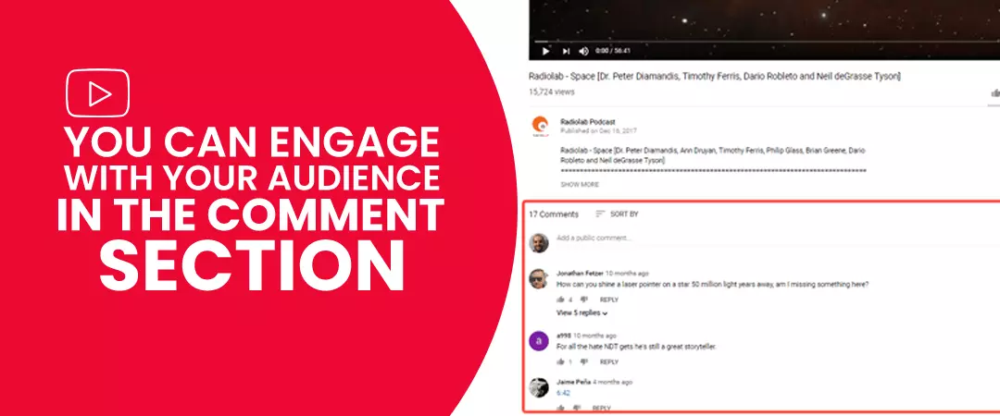
Responses from your listeners are crucial to know if they like what you produce. Nevertheless, it can prove to be quite a challenge to compel your watchers to leave a reply. YouTube, on the other, makes it much easier to interact with the audience in real-time - driving your watchers to drop feedback about your podcast.
Engagementis the foundation that is essential to build trust and establish a lasting relationship with your listeners. Replying to comments from your audience is crucial if you want to know more about their preferences - it also helps you connect with the audience.
When you buy YouTube subscribers from trusted vendors, you get targeted people who give genuine engagement to your content.
3. YouTube Analytics Provide More Sophisticated Data
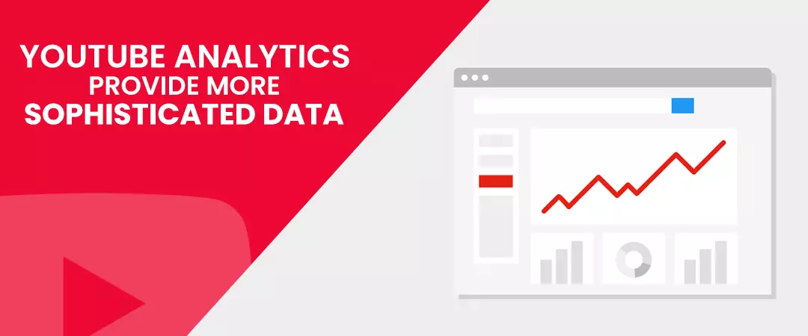
The data provided by YouTube analytics is unmatched by any podcast directory or network. Scrutinizing the data can help broadcasters optimize footage according to their viewer's needs.
Podcast networks provide fever statistics which includes information about total downloads or streams of your episodes. Whereas YouTube analytics discloses much more in-depth metrics about your audience behavior, watch time on episodes, sources that referred viewers to your podcast etc.
4. YouTube Metadata Can Improve Your Search Ranking on Google
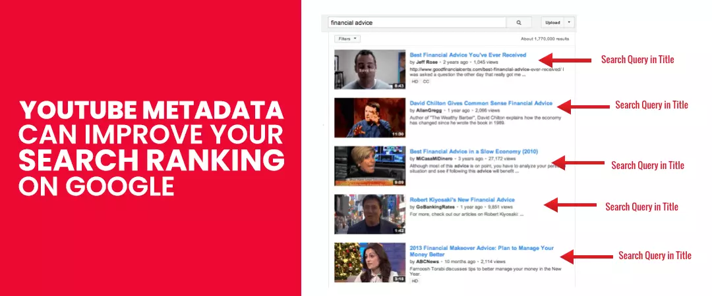
Title, description, and tags form three meta-data pillars of your YouTube SEO. You can also throw transcripts into the mix - when you nail every one of them, your ranking in the search results substantially improves.
YouTube is the second largest search engine on the planet, trailing behind its parent company Google. Hence, proper optimization of your metadata can improve your podcast's reach and win you more listeners.
Cons of YouTube Podcasts
1. Less Interaction with Listeners
There's a reason why there are not many similarities between users on typical podcast networks and YT. Audiences on YT watch videos for entertainment, whereas podcast listeners get in too deep and often stay till the end of a podcast episode.
On this platform, there is always the better video that your viewers can jump to - if yours didn't do the job of keeping him entertained. Hence, you need to have to hook in your video that grabs your audience’s attention from the start - it is even more critical if your podcast on YouTube channel tends to go longer.
Thankfully one benefit of YouTube podcasts is that analytics will reveal the drop-off rate of your episodes - audiences that are not interested in your video will stop watching after a few minutes. By analysing the data you can better optimize your content.
2. More Money and Equipment to Do a Podcast
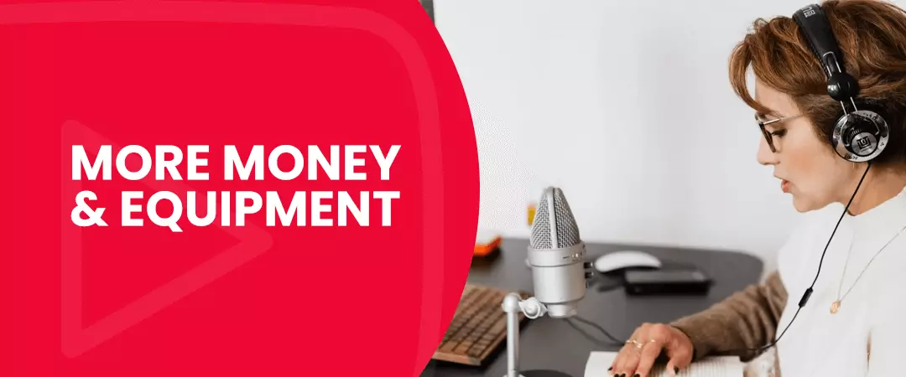
Starting and creating podcasts on YT channels means you have to record video - this can take time and require you to invest in recording equipment- this is in stark contrast to a conventional podcast which costs less money and time.
The audience on this platform is different; what worked for you on your podcast host will not necessarily work its magic on the world's popular video streaming platform. On YT, quality takes the top spot - compromise on the same can have unfavorable outcomes, reflected in your analytics.
3. Lower Return on Your Investment
You won’t suddenly wake up one day and be the best podcast on YouTube. Growth on the platform takes time; when you follow proper YT SEO guidelines, your episodes can take top spots when they appear on the search engine results pages.
YouTube algorithm is programmed to take into consideration multiple factors when appraising a video:
- Likes
- Comments
- Audience Retention rate
- Click-through rate
On the other hand, if your content does not match YT quality standards, you will not gain much from the time, money, and efforts you invested in publishing episodes on YouTube.
4. Metrics from YouTube Analytics Are Not Accurate
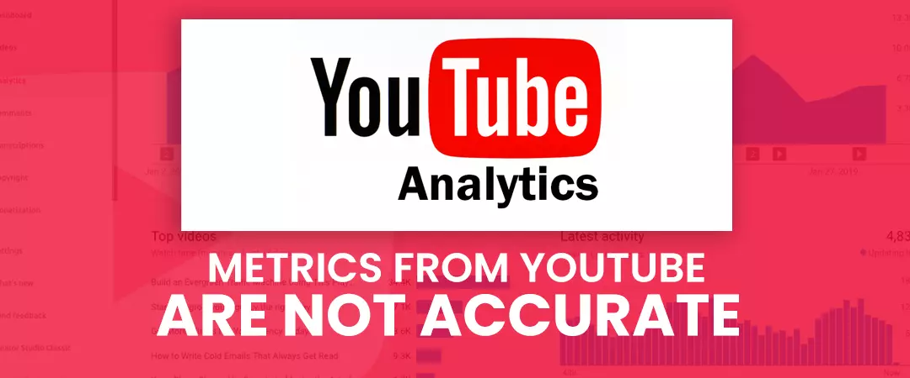
The metrics provided by YT analytics can be beneficial to podcasters, but they can also be misleading.
High number views are impressive vanity metrics, but that is just for show. What matters is how long the viewers have stayed and continued watching your episode without dropping off. It won't do you much good if you have 50 thousand viewers, but most of them leave after the first 20 seconds. You will be better off having fewer audiences who stayed and watched your content for a longer duration.
Looking at many views on their shows can cause podcasters to compromise on factors that make podcasts a great medium. Focus on producing content that you are passionate about, even if you get fewer takers for the same.
Equipment Recommendations for Your Podcast on YouTube
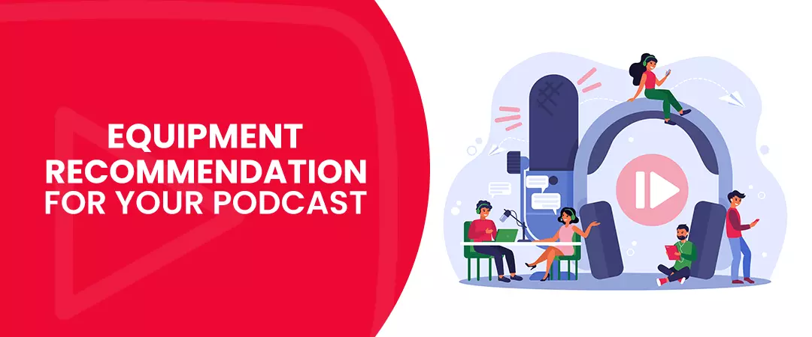
Never be afraid to take the next step. Move away from the practice of simply converting your audio resources to MP3 files. You can attract a much larger audience by posting quality videos that you record.
Although you do not need equipment that puts strain on your pockets - you have to make sure that your episodes are easy to interpret by your watchers without much difficulty.
For the best podcast on YT, you need appropriate equipment’s, below are some of our suggestions for your podcast equipment; these are just recommendations:
- Mic: Shure SM7B Cardioid Vocal Dynamic Microphone.
- POP filter: Nady MPF-6 6-inch Clamp on Microphone Pop Filter.
- Headphones: Audio-Technica ATH-M50X Professional Studio Monitor Headphones.
- Boom arm: Heil Sound PL-2T Overhead Broadcast Boom
For capturing your video footage, you will require a camera. Do not go for an expensive one with lots of features - your mic will do the job of capturing your voice. If you have additional money to spare, you can consider purchasing two cameras for different angle shoots. You can give a more professional feel to your episodes by transitioning between multiple angles - especially if you invite many guests to talk on your YouTube podcast.
Following are a few camera suggestions for podcasting on YouTube:
- GoPro HERO9
- Marantz Professional Turret
- Sony ZV-1 Camera
We hope you found our article on How to start a podcast on YouTube valuable, do check out more such content on our website.
How do you like shooting your podcasts for YouTube?
Feel free to share!